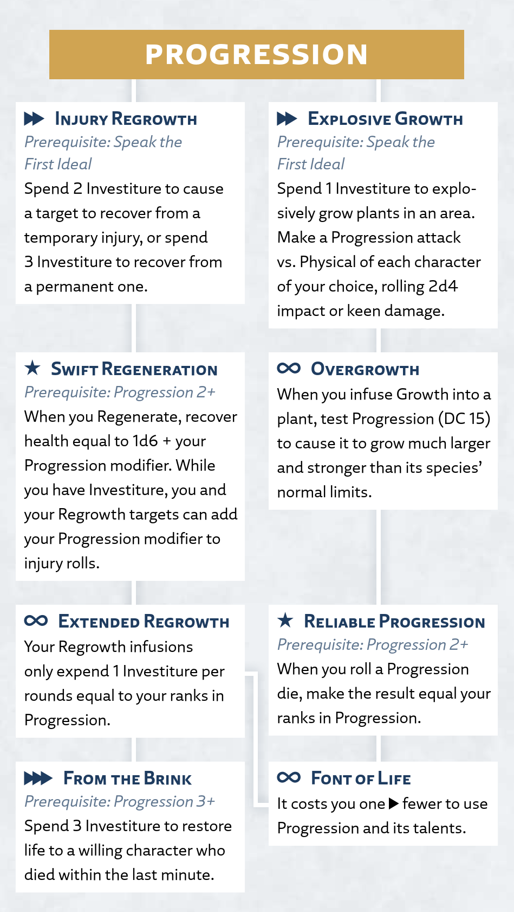

Progression
Awareness
The surge of Progression controls the growth and healing of living things. Its two primary effects are Growth (which can rapidly sprout and mature plants) and Regrowth (which can heal a character's body and soul).
Progression Surge
Radiant Orders: Edgedancer, Truthwatcher
Activation: ▶▶
You infuse life into a living thing other than yourself within your reach; you must have a hand free and touch the target.
Plant Growth. If you target a living plant (or its seed) with Growth, spend 1 Investiture to cause it to rapidly grow to a size of your choice. This can't exceed the surge size for your ranks in Progression (see the Surge Scaling table at the beginning of this chapter), nor the normal limits of the largest plants of its species.
Character Regrowth. If you target a living character with Regrowth, infuse 1 Investiture or more into them. The infusion uses 1 Investiture each round, and for the duration, that character recovers health equal to 1d4 + your Progression modifier at the start of each of their turns. The size of this die increases with your ranks in Progression: at 2 ranks, roll 1d6 when recovering health (instead of 1d4), and so on.
Using Progression
In addition to the basic surge rules above, this section provides more guidance on using or interacting with this surge in your game.
Growth
Growth can be used creatively in many ways. You might grow a pathway over an obstacle or create inconspicuous concealment. You could block line of effect, create cover or difficult terrain, or erect obstacles to climb. It's up to you and your GM to resolve such creative uses.
Regrowth
Regrowth heals by transforming the target's Physical form to better match their Cognitive and Spiritual self. As such, the narrative effect of each character's healing depends on who they are at their core and how they view themself. When you use Progression to heal a character, they (not you) determine what's healed and how, likely doing so subconsciously.
Progression Talent Tree
Progression Talents
The following talents, presented here in alphabetical order, appear in the Progression talent tree for the Edgedancer and Truthwatcher paths.
Explosive Growth
Prerequisite: Speak the First Ideal
Activation: ▶▶
You grow plants explosively, striking and ensnaring your enemies.
Spend 1 Investiture to use Growth in an area up to the size you can affect with your ranks in Progression. Make one Progression attack and compare the test result to the Physical defense of each character of your choice in that area. Roll 2d4 damage, dealing either impact or keen damage (whichever is logical for the grown plants). The size of this attack's damage dice increases with your ranks in Progression; at 2 ranks, roll 2d6 (instead of 2d4), and so on.
You can spend ✧ to cause any number of the targets you hit to become Immobilized until the end of your next turn.
Extended Regrowth
Prerequisite: Swift Regeneration talent
Activation: ∞
Your Regrowth infusions expend Stormlight far less quickly.
When you infuse Regrowth into a character, instead of the infusion expending 1 Investiture per round, it expends 1 Investiture per number of rounds equal to your ranks in Progression. For example, if you have 3 ranks in Progression, those infusions expend Investiture once every 3 rounds.
Font of Life
Prerequisite: Extended Regrowth talent or Reliable Progression talent
Activation: ∞
You've grown so powerful that growth and healing flow from you with incredible speed.
It costs you one fewer ▶ to use Progression and its talents.
From the Brink
Prerequisite: Progression 3+; Extended Regrowth talent
Activation: ▶▶▶
You use Regrowth to pull someone back from the very edge of death.
Spend 3 Investiture and touch the body of a character who died within the last minute. If the target is willing, they return to life Unconscious with 0 health.
Injury Regrowth
Prerequisite: Speak the First Ideal
Activation: ▶▶
You use Regrowth to rapidly recover injuries, including permanent ones and missing body parts.
Spend 2 Investiture to cause yourself or a willing character you touch to instantly recover from a temporary injury of the target's choice, or spend 3 Investiture to recover from a permanent injury.
Overgrowth
Prerequisite: Explosive Growth talent
Activation: ∞
You persuade plants to grow beyond their normal size and shape.
When you infuse Growth into a plant, you can make a DC 15 Progression test as part of that action. On a success, you cause the plant to grow beyond its species' normal limits, up to the surge size for your ranks in Progression, and the plant's current and total health increase by 2d4. The size of these dice increases with your ranks in Progression; at 2 ranks, roll 2d6 (instead of 2d4), and so on.
Reliable Progression
Prerequisite: Progression 2+; Overgrowth talent
Activation: ★
Through adept control of your Stormlight, your Growth and Regrowth become even more dependable.
When you roll a die whose size increases with your ranks in Progression (such as when using the Explosive Growth, Overgrowth, and Swift Regeneration talents) or when a willing character rolls a die to recover health from your Regrowth, if the die rolls a number lower than your ranks in Progression, you can change that result to instead equal your ranks in Progression (no action required).
Swift Regeneration
Prerequisite: Progression 2+; Injury Regrowth talent
Activation: ★
You can heal yourself with greater efficiency and make those infused with your Regrowth more resistant to injury.
When you use Regenerate, instead of recovering the normal amount of health, you can recover health equal to 1d6 + your Progression modifier. The size of this die increases with your ranks in Progression: at 3 ranks, roll 1d8 (instead of 1d6), and so on.
Additionally, while you have 1 Investiture or more, you and any character infused with your Regrowth can add your Progression modifier to injury rolls.